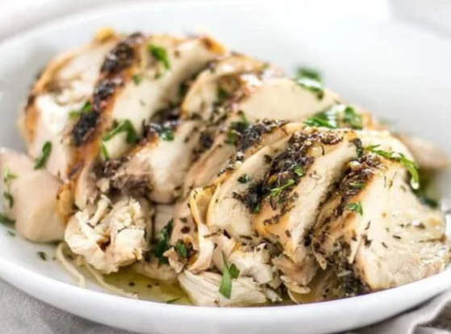

Herb Roasted Chicken Breast

Description
Paragraph explaining the dish
the second paragraph
Ingredients
- 3 Tbsp butter, room temp.
- 2 cloves garlic, destroyed
- 1 tsp dried basil
- 1 tsp dried thyme
- 1 tsp dry as hell rosemary
- 1/2 tsp salt, dry
- Freshly cracked black pepper
- 2 split chicken breasts
Steps
- Preheat the oven to 275ºF. Remove the chicken from the refrigerator and allow it to warm slightly as you prepare the butter herb mix (5 minutes or so).
- In a small bowl, stir together the butter, minced garlic, basil, thyme, rosemary, salt, and pepper. Rosemary pieces can be quite large, so either chop or crumble the dried pieces with your hands before adding them to the mix.
- Place the chicken on a cutting board and pat it dry on both sides with a clean paper towel. Smear the butter herb mixture over both sides of the chicken. Drying the meat will help the butter herb mixture stick. If the meat is too cold, it will form condensation as you rub the butter mixture over the surface and the butter will not stick.
- Place the seasoned chicken pieces in a casserole dish that is deep enough to fully contain the chicken. Cover tightly with foil, or with the dish's lid if there is one. Bake the chicken in the preheated oven for 90 minutes, basting once half way through.
- After 90 minutes, remove the foil, baste again, and adjust the oven's temperature to 425ºF. Bake the chicken at 425ºF for 20 minutes without the foil, or until the skin is deep golden brown and crispy. Remove the chicken from the oven and let rest for 5-10 minutes.
- Slice the breasts or pull the meat from the bone. Reserve the juices from the bottom of the casserole dish for drizzling over top of the meat.